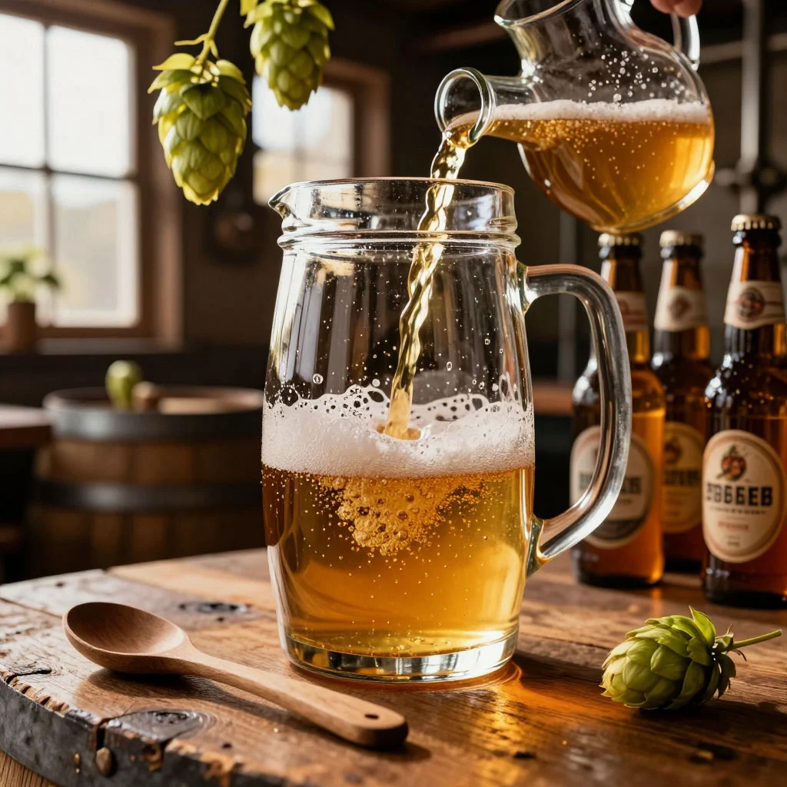

ДАЙДЖЕСТ / BODREEVSHOW
Лагеризация пива

Лагеризация пива: зачем нужна и как организовать
Лагеризация — ключевой этап в производстве лагера, от которого во многом зависит итоговый вкус и качество напитка. Разберёмся, в чём суть процесса, зачем он нужен и как его организовать — в том числе в домашних условиях.
Зачем нужна лагеризация
Лагеризация (или лагерная выдержка) — это созревание пива за счёт медленного брожения дрожжей при низкой температуре (0–5 ∘C). Её основные задачи:
Улучшение прозрачности. При низких температурах остатки дрожжей и взвеси быстрее оседают на дно, делая пиво визуально чистым и привлекательным.
Смягчение вкуса. Выдержка «сглаживает» резкие ноты, убирает нежелательные привкусы (например, маслянистые тона от диацетила), делает профиль напитка более гармоничным.
Стабилизация букета. Дрожжи продолжают медленно работать, перерабатывая остаточные сахара и соединения, которые могут портить вкус.
Увеличение срока хранения. Холодная выдержка подавляет развитие посторонних микроорганизмов, что продлевает свежесть пива.
Формирование типичного «лагерного» характера. Именно лагеризация даёт тот чистый, освежающий вкус, за который ценят лагеры (пилзнеры, бок, хель и др.).
Этапы и технология лагеризации
Главное брожение при 5–12 ∘C (длится около недели). Сусло охлаждают, добавляют лагерные дрожжи и оставляют для первичной ферментации.
Диацетиловая пауза (опционально): температуру поднимают до 15–18 ∘C на 2–3 дня. Это помогает дрожжам расщепить диацетил — соединение с маслянистым привкусом.
Охлаждение и начало лагеризации: пиво охлаждают до 0–2 ∘C и выдерживают 3–8 недель (иногда дольше для крепких стилей).
Карбонизация и розлив (после выдержки). Пиво фильтруют (или оставляют нефильтрованным), насыщают CO 2 и разливают в тару.
Как организовать лагеризацию: варианты для разных масштабов
1. Промышленное производство
На пивоварнях используют:
Цилиндро‑конические танки (ЦКТ) с охлаждающими рубашками. Позволяют точно контролировать температуру на всех этапах.
Специализированные лагерные подвалы/камеры с климат‑контролем.
Автоматизированные системы для снятия дрожжей после охлаждения и фильтрации.
2. Домашнее пивоварение
Для небольших объёмов подойдут более простые решения:
Холодильник/погреб. Идеальный вариант — выделить отдельный холодильник, где можно стабильно поддерживать 0–5 ∘C.
Термокамера из термоизоляционного короба. Соберите ящик из пенопласта или изолона, установите цифровой терморегулятор и мини‑охладитель (например, элемент Пельтье).
Водяная баня со льдом (кустарный метод). Поместите ферментер в ёмкость с ледяной водой и периодически обновляйте лёд. Менее точен, но работает для коротких выдержек.
Выдержка в бутылках. После карбонизации (с декстрозой, 7–9 г/л) бутылки ставят в холодильник на 2–4 недели. Удобно для малых партий, но требует осторожности: давление CO 2 растёт при охлаждении.
Практические советы
Когда начинать лагеризацию? Убедитесь, что брожение завершено: плотность по гидрометру стабильна 2–3 дня подряд.
Снимать ли осадок? Перед охлаждением перелейте пиво в чистый ферментер (методом сифона), оставив дрожжевой осадок. Это предотвратит появление неприятных привкусов.
Длительность выдержки. Стандарт — 3–4 недели; для крепких лагеров (бок, доппельбок) — 6–8 недель и более.
Контроль температуры. Избегайте скачков: даже кратковременное потепление активирует дрожжи и может испортить вкус.
Санитария. Лагеры особенно чувствительны к загрязнениям. Тщательно дезинфицируйте всё оборудование.
Выбор дрожжей. Используйте специализированные лагерные штаммы: сухие — Fermentis S‑23 (фруктовый профиль), W‑34/70 (классический); жидкие — White Labs WLP 8 00 (для пилзнеров).
сухие — Fermentis S‑23 (фруктовый профиль), W‑34/70 (классический);
жидкие — White Labs WLP 8 00 (для пилзнеров).
Итог
Лагеризация — не просто охлаждение, а сложный биохимический процесс, формирующий характер лагера. Даже в домашних условиях его можно организовать с помощью холодильника или термокамеры. Главное — терпение (выдержка требует времени) и точность (стабильная низкая температура). Результат — чистое, прозрачное пиво с мягким, сбалансированным вкусом — стоит затраченных усилий.